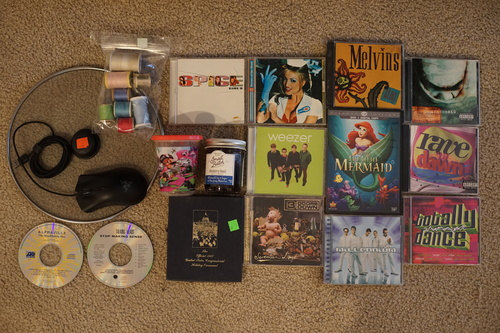

Today was a big day of digging through hard drives. I knew I had my old sites somewhere! Somewhere!! but where? They weren't on my externals so I went through my hard drives, which are all on their last legs.
On HDD 4/5, I found it! And another personal site I'd completely forgotten I made. I've censored and uploaded them all to the (new!) archive so feel free to check them out!
I fixed a few pages that were like really??? It only takes like 2 seconds to put that image in. It's crazy how little content there is though.
I've labeled all my hard drives now so they'll be easier to look through next time. I thought I had everything backed up but clearly I didn't. I now have 0 (zero) HDD in my desktop. Feels strange. Am I living in the future?!
Now where do I store my stack of 5 failing but not dead hard drives?
We dug through a huge pile of loose CDs... There were a few more I wanted in there but they were more scratched than I was willing to take a chance on. It's so weird to me someone would leave 100+ CDs loose in a pile but they obviously didn't care because they just donated them anyway. There were even multiple autographed CDs from a particlar artist.
I am out of both blue and pink. I'm also not picky enough to exactly match threads.
Ryan's. It looks nicer than my $4 deathadder expert!
Ryan's
Ryan's
speak of the devil. no straw
Ryan's. Not from any thrift store.
this man tried to kill me yet i keep buying his CDs
Ryan's
Ryan's
I DID NOT google this and now I've made the mistake of buying a live album. UGH. garbage
Ryan's
Ryan's, not pictured
Ryan's, not pictured